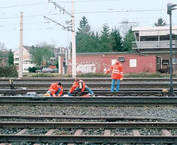

Kurzfristige Arbeiten geringen Umfangs sind Arbeiten, an denen höchstens drei Personen teilnehmen. Von diesen drei Beschäftigten ist einer für die Sicherung einzusetzen. Den Beschäftigten sind die Orts- und Streckenkenntnisse zu vermitteln sowie die Gefahren aus dem Bahnbetrieb. Die Beschäftigten müssen besonders geeignet sein.
Foto: VBG, Hamburg